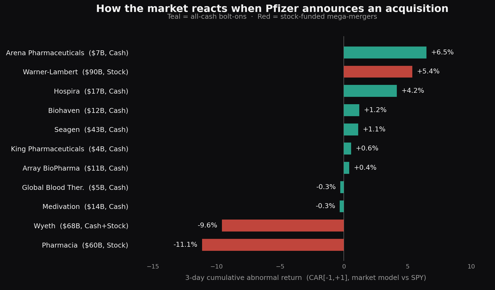

How the Market Reacted to Pfizer’s Acquisitions
Research · About 5 min read
Pfizer is over 170 years old and it barely discovers its own drugs anymore. It buys them. Warner-Lambert, Pharmacia, Wyeth, King Pharmaceuticals, Hospira, Medivation, Array, Arena, Biohaven, Global Blood Therapeutics, Seagen, and in 2025, Metsera. That is not a research pipeline, it is a shopping list.
There is a reason for all the shopping. Between 2026 and 2028 Pfizer loses patent protection on Eliquis, Ibrance, Xtandi, and Prevnar, which the company itself pegs at roughly 17 to 18 billion dollars of annual revenue walking out the door. The COVID money that funded the last few years is already gone, Comirnaty and Paxlovid fell from 56.7 billion dollars in 2022 to about 6.7 billion in 2025. And Pfizer's own labs swung at the obesity market twice and missed both times, which is this whole story in a single example. Instead of building a weight-loss franchise, Pfizer went out and bought one, paying around 10 billion dollars for Metsera in late 2025 after fighting Novo Nordisk through a bidding war to win it. When your own labs cannot replace what the patent cliff is about to take, you buy someone whose labs already did.
So the strategy is not a mystery. The question I actually care about is whether it works. Not whether the drugs are good, whether the deals create value for the people who own the stock. So I tested it.
How the analysis was run
The original code and price data are not available here. The table groups Wyeth, which used mixed cash and stock consideration, with stock-funded deals; this differs from a pure cash-versus-stock comparison.
I ran an event study, the same market-model approach I have used before. The idea is simple. I estimate the return associated with the market and compare it with the observed return around a deal announcement. The difference can also include other company news and model error.
For each of eleven major Pfizer acquisitions from 2000 to 2023, I estimated Pfizer's normal relationship to the S&P 500 over the year ending ten days before the announcement, a plain least-squares regression of Pfizer's daily returns on the market's. That gives me the return I should have expected on any given day. The abnormal return is what actually happened minus that expectation. I added it up over a three-day window, one day before through one day after the announcement, to get the cumulative abnormal return, the CAR. A positive CAR means the return exceeded the model expectation; a negative CAR means it fell short. Neither sign alone establishes whether a deal will create value. All of it in Python, prices from yfinance, nothing exotic.
What the average said
Almost nothing. Across all eleven deals the average three-day CAR was minus 0.18 percent, and it was nowhere near statistically significant. If you stopped there you would decide the market simply has no opinion about Pfizer buying things. That is the wrong place to stop.
What the split said

Sort the deals by how Pfizer paid, and the flat average breaks into two very different stories.
The deals Pfizer funded with its own stock got hit. Pharmacia lost 11.1 percent over three days. Wyeth, a stock-heavy mix, lost 9.6 percent. The all-cash deals told the opposite story, they averaged plus 1.7 percent, and only two of the eight printed negative at all. Seagen, the 43 billion dollar cancer bet that was supposed to be the scary number, drew a shrug and a small green tick. The pattern is clean even with a small sample. In this sample, returns differ by payment type. That does not isolate payment type from deal size, timing, or other differences.
| Deal | Announced | Value | Financing | CAR [-1,+1] | CAR [-5,+5] |
|---|---|---|---|---|---|
| Warner-Lambert | 2000-02-07 | $90.0 | Stock | +5.36% | -2.50% |
| Pharmacia | 2002-07-15 | $60.0 | Stock | -11.13% | -15.74% |
| Wyeth | 2009-01-26 | $68.0 | Cash+Stock | -9.57% | -13.68% |
| King Pharmaceuticals | 2010-10-12 | $3.6 | Cash | +0.57% | +0.74% |
| Hospira | 2015-02-05 | $17.0 | Cash | +4.15% | +6.11% |
| Medivation | 2016-08-22 | $14.0 | Cash | -0.32% | +0.42% |
| Array BioPharma | 2019-06-17 | $11.4 | Cash | +0.42% | -0.63% |
| Arena Pharmaceuticals | 2021-12-13 | $6.7 | Cash | +6.47% | +10.94% |
| Biohaven | 2022-05-10 | $11.6 | Cash | +1.20% | +5.90% |
| Global Blood Ther. | 2022-08-08 | $5.4 | Cash | -0.28% | -4.13% |
| Seagen | 2023-03-13 | $43.0 | Cash | +1.12% | +0.51% |
Why that makes sense
This is not a Pfizer quirk, it lines up with what the research on acquirer returns has said for decades. When a company pays in its own stock, it is quietly admitting it thinks that stock is expensive, because if it thought the shares were cheap it would pay cash and keep them. Investors read the signal and mark the stock down. Stock-funded mega-mergers also tend to be the ego deals, the mergers of equals with enormous integration risk and a fat premium on top. Cash bolt-ons are the opposite, small enough to swallow, aimed at a specific hole, and paid for with money instead of a confession.
Warner-Lambert is the one stock deal on the chart that went up, 5.4 percent, and even that fits. It was a hostile fight Pfizer won to take Lipitor, and the market was pricing the prize, not the way Pfizer paid for it.
What this sample can support
I want to be careful here, because this is exactly where it would be easy to oversell. Eleven deals is a tiny sample. When I actually test whether the cash group and the stock group are statistically different, the p-value sits around 0.3, which is a polite way of saying I cannot rule out plain luck. The gap between the groups is almost seven percentage points, which is economically enormous. The statistics just are not strong enough to swear on it, and pretending otherwise would be the same mistake I made betting against a one-way afternoon in the futures market.
So here is what the data supports and nothing more. Pfizer's modern playbook, cash bolt-ons paid for out of the COVID pile, is the exact kind of dealmaking the market has historically tolerated. Seagen is the cleanest example there is, a huge number paid in cash for a real oncology platform, and the market did not blink. That is the disciplined version of buying your growth.
Whether disciplined buying is enough is a different question, and the stock has its own opinion on that one. Pfizer still trades far below its 2021 high. The market is fine with how Pfizer is shopping. It is still not convinced the shopping will out-run the cliff. That is the part no event study can answer for me. You have to wait for the revenue.